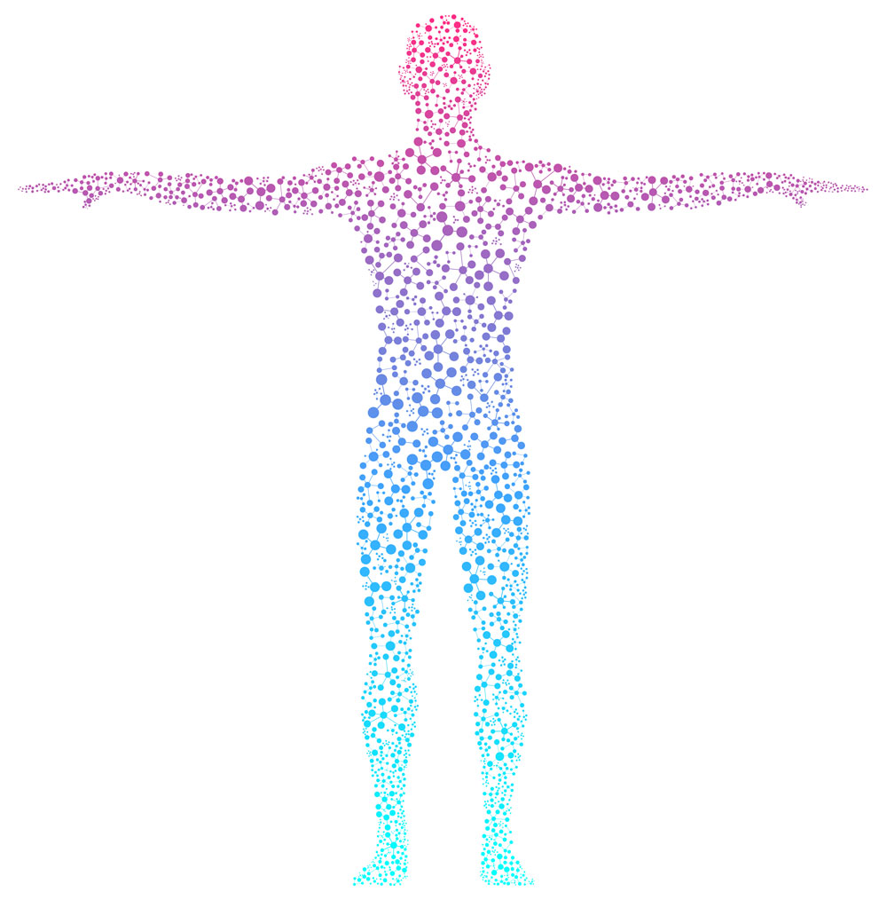
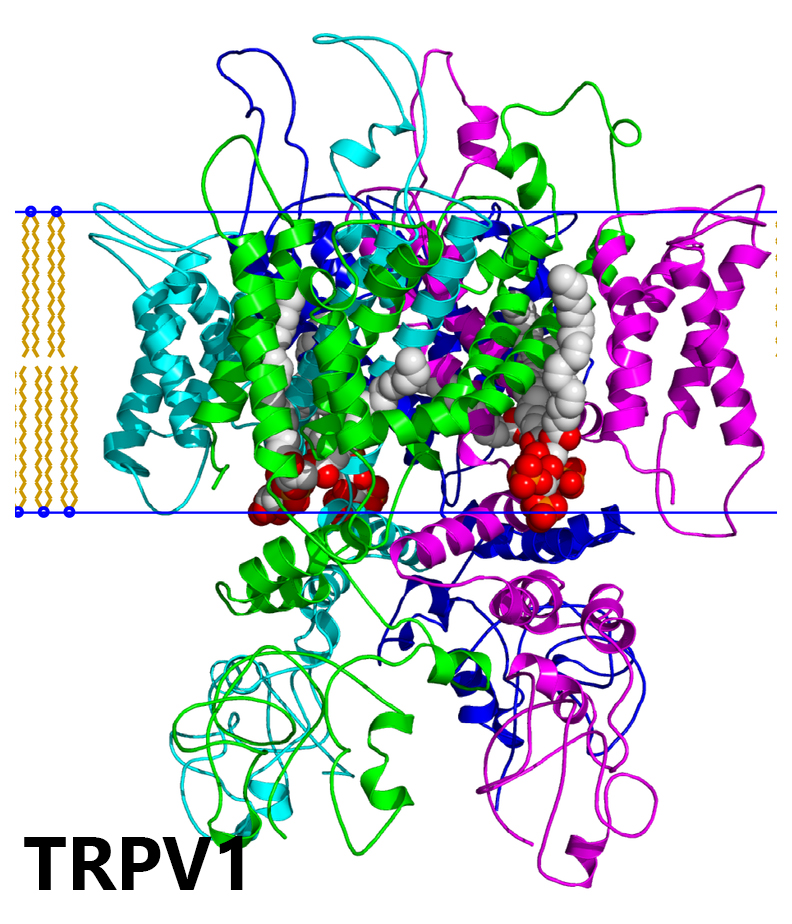
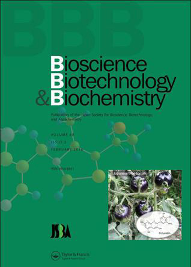
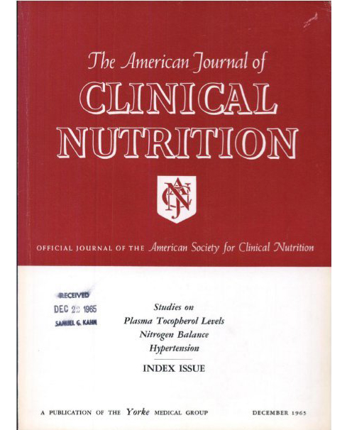
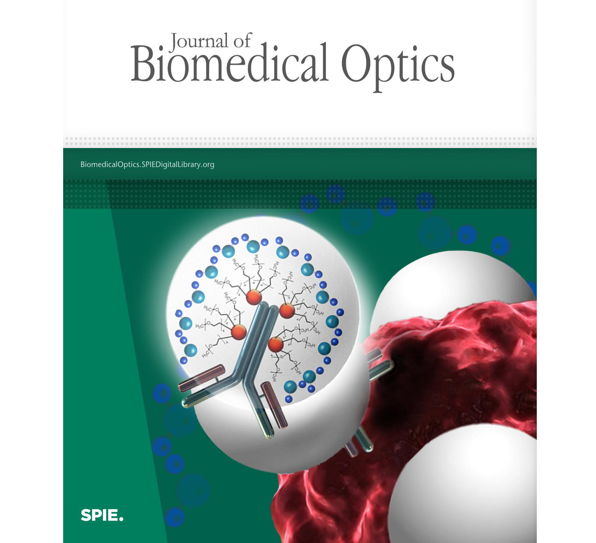
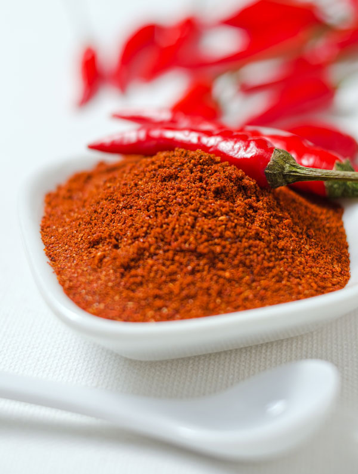
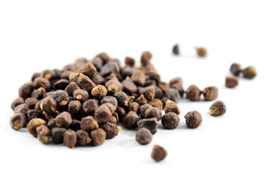
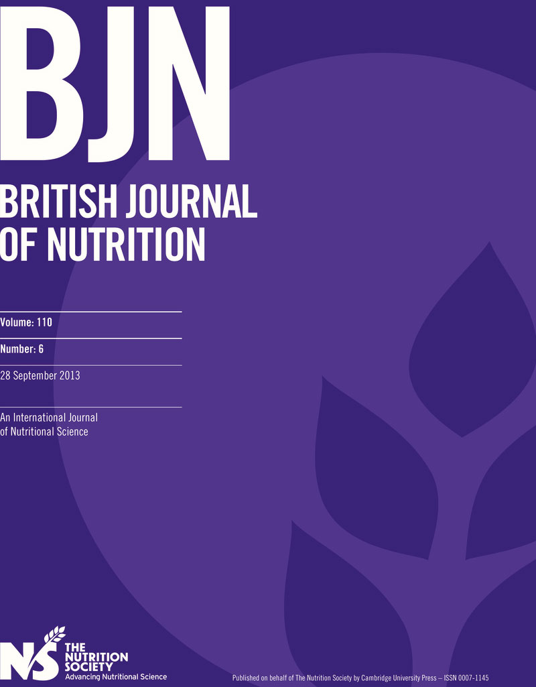
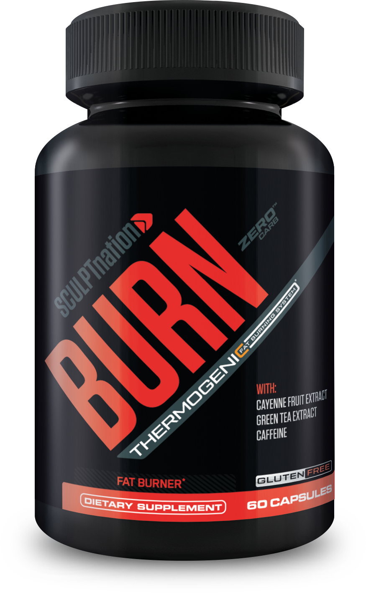

Hey it’s Vince Sant with V Shred and Sculpt Nation.
In the past two years, my fitness and nutrition advice has been used by more than 1.2 million men and women in over 150 countries…
I’ve been featured on places like NBC, Oxygen, Insider, Live Strong, the LA Times, the Chicago Tribune, and Muscle and Fitness just to name a few...
- And I’m going to show you...
- How to change the way your fat cells talk to each other.
- And no, I haven’t gone crazy…
I really do mean “talk”… Because right now, as you’re reading this…
Your fat cells are busy chatting away…
And depending on how that conversation is going…
It’s either putting your body into a fat-burning mode…
Where your metabolism is flying, you’ve got tons of energy, and you rarely suffer from uncontrollable food cravings….
Or it’s putting your body into a fat-storing mode…
Where, despite your best efforts at eating healthy and hitting the gym regularly…
Fat seems to just stay stuck to certain parts of your body…
You feel exhausted way too often…
And you’re frequently hungry, with late-night-snack-cravings that seem impossible to control.
Now if the first thought that races through your mind when you hear all this is:
“I never struggle with my weight, everything is so easy!”…
Then it probably means your fat cells are already having the right conversation…
And that’s awesome, you can go ahead and leave this page right now.
But if you’re like a lot of the people I talk to…
And you sometimes feel frustrated or even embarrassed by your weight…
Or it feels like you’re always losing the same 10 pounds over-and-over-again…
And that your stomach, hips, and waistline are like flesh-colored yo-yos…
That are constantly going up-and-down in size…
No matter how hard you try to keep things stable…
Then it is vitally important that you watch this until the very end…
Because what I’m about to share with you could be the breakthrough that changes everything.
You see, what I want to share with you today…
Is a way to fundamentally transform your body’s relationship with fat…
So that instead of letting those fat cells continue to gather together inside your body…
Your body starts EVICTING them like a heartless landlord…
Plus as you’re going to see on this page…
It could also help to stop the storage of new fat too…
Which means not only is this something that could help you to burn the fat you already have…
It may help you to keep that fat off for the long-run as well.
Before we continue though, I do want to acknowledge the big elephant that’s in the room…
Which is that…
If you’ve been struggling to control your weight for any significant amount of time now…
Then this might all be sounding a little too good to be true…
Especially if you’ve tried more diets than you can count on all your fingers and toes…
Or if you think you’ve seen it all when it comes to your body, and the way it burns fat.
If that’s what you’re thinking right now, I can actually relate…
- I’ve studied diet and nutrition for more than two decades…
- I’ve helped millions of people to improve their health…
- I thought I knew everything when it comes to weight loss..
- So when I first stumbled across this bizarre scientific discovery…
- And saw that it was supported by more than 100 studies…
- From some of the most famous universities in the world…
It was honestly a humbling experience.
I thought I knew everything about losing weight…Yet nobody had ever told me about this before...
And it was only after I started sharing this fat-burning breakthrough with my millions of followers…
Folks who had all kinds of body types, and very different weight loss goals…
And I saw how time-and-time-again…
These folks were coming back to me in a state of pure ecstasy…
Because they were finally starting to see the pounds drop off…
Or finally getting to experience the joy of watching their dress size drop from double to single digits…
That I finally became a true believer.
And since then…
This breakthrough has now been used by a documented 11,000 people and counting…
And while I am extremely proud of that fact…
I really can’t take all of the credit…Because everything I’m about to show you…
Is based off the tireless work of scientists at Harvard and Johns Hopkins University…
Men and women who are way smarter than me…
And whose research is what led to this truly revolutionary discovery…
Something that changes the conversation that’s happening between your fat cells…
And gets your body to start looking at stored fat as an enemy…
Instead of as a friend…
So that you stop stockpiling fat in all those troublesome areas like your belly, butt, and thighs…
And instead, start burning your fat cells for healthy, sustainable energy.
It’s almost as if this breakthrough puts a big NO VACANCY sign inside your body…
Something that lets fat cells know that they’re no longer welcome…
And if this is all still sounding a little over-the-top…
Just wait until you see the hardcore scientific studies about this breakthrough.
I’m going to sharemany of those studies with you inside this presentation…
And, of course, I’m also going to give you a simple, step-by-step breakdown of how this new discovery works…
That way you can try it for yourself, from the comfort of your own home, pretty much right away.
Plus..
I’m also going to reveal the surprising reason why the Keto Diet can be disastrous for people looking to experience long-term weight loss…
(Oddly, this reason has nothing to do with food) …
- And I’m going to tell you a really dirty secret about how Pro Athletes lose weight…
- A secret they’d probably prefer you don’t hear…
- But that will likely make your jaw drop.
- You’re really going to want to see what this dirty secret is by the way…
- Because it helps explain why you’ve always struggled to lose weight too.
All of that, and a whole more, is coming your way inside this video…
So make sure to pay close attention… Because no matter what your body type, or how frustrated you may feel right now…
Once you begin using the fat-burning breakthrough I’ll be sharing today…
It could immediately feel like you’ve broken through an invisible glass ceiling…
A ceiling that you didn’t even know was there…
But that’s been holding you back all of this time…
Keeping you from reaching your weight loss goals…
And making you feel tired, foggy-headed, and like there was no hope.
Well right now, we’re going to shatter that ceiling…
And I hope you’re as excited as I am…
Because the time is NOW.
So like I mentioned at the beginning, my name is Vince Sant…I’m a fitness model…
The co-founder of V-Shred and Sculpt Nation
which are two of the fastest growing health brands in the world.

And I’m also the author of 6 best-selling fitness and nutrition programs…
Which have been bought by more than 1.2 million men and women…
In a staggering 150 different countries.
I’m really proud of my career in fitness and nutrition, and what I’ve been able to accomplish…
But what I want to share with you today…
Is NOT something you will find in any of my fitness guides…
And it’s NOT a diet plan, a workout video, or anything else you’re thinking of either.
Instead…
This discovery is all about how your body, and your fat cells, communicate.
Because like I mentioned at the beginning of this video…
As weird as it may seem, your fat cells are talking to each other constantly.
And new research out of Harvard has found that your fat cells talk with other organs in our body too.
Now generally, when your fat cells are talking to one another…
They are only saying one of two things…
Either they are saying: “let’s keep holding onto this fat inside of us…”
Or they are saying: “we need energy, let’s burn this fat NOW.”
HOLD or BURN…
That’s the language of your fat cells.
And here’s the thing…
The “default mode” for your fat cells is typically to HOLD fat...
Not to BURN it.
Why?
It’s pretty simple biology…
Our bodies were designed to store fat…
So that it’s available in an emergency…
And for most of human history, this was actually a good strategy for two major reasons:
First, food was often scarce.
Hunters and gatherers might have no problem finding food during a warm spring month…
But then spend several months starving during a harsh winter...
So to protect us against the uncertainty of when our next meal was coming…
Our bodies would store as much fat as possible during the good times…
That way we could burn through it during the hard times.
And the second reason our fat cells’ “default mode” is to HOLD fat…
Is because for about 95% of human history…
We weren’t at the top of the food chain.
Insulting, I know.
But the truth is…
We used to be routinely hunted by predators like lions, leopards, and even crocodiles…
And when you’re running through the Savannah on a 105 degree day in July…
With a majestic-but-terrifyingly-hungry lion hot on your tail…
You better have a lot of energy ready to burn…
Otherwise, you’re going to end up as some big cat’s human-flavored Meow Mix.
Well thanks to our stores of fat, we did have enough energy…
And the result is that while some of our unlucky ancestors got eaten by predators…
Most of them were able to escape…
And thank God for that, because otherwise none of us would be here today.
Of course, here’s the thing…
- While it used to make sense for our bodies to store as much fat as possible…
- Nowadays, in 2019, things are a lot different.
- We can get food delivered to us on-demand…
- We have a pantry full of snacks…
- We eat three meals a day…
- And if you’re reading this right now…
I’m pretty sure you’re not too worried about being hunted down by a lion anytime soon.
So on the one hand…
The fact that we’re not at risk of starving or being hunted is great…
But on the other hand, it’s got our bodies all screwed up.
Because today, we’re storing all of this fat we don’t actually need…
Which is one of the main reasons why the obesity rate keeps going up...
And why it can feel pretty impossible to get rid of all your excess body fat,
no matter how hard you try.
You see, here’s the truth…
And it’s something most fitness experts will never tell you:
Even if you do cardio an hour a day….
Eat nothing but proteins and vegetables…
And pump iron at the gym six times a week…
Your body is STILL going to keep holding onto as much fat as it can.
It’s what your body was designed to do…
And this is one of the reasons why so many people find things like Keto Diet to be so tough…
Because even if you don’t eat carbs…
You still need to eat protein…
And your body just converts that protein into fat instead…
Then stores it away for a rainy day.
The exception to this is when you get your ratio of fats, carbs, and proteins just absolutely perfect…
But perfection is pretty freaking hard…
Which is why so many people ultimately fail with the Keto Diet…
They hit a plateau, or they can’t stay in ketosis, or they lose weight early but then it creeps back on…
And this can happen no matter how smart or dedicated to Keto they are.
It sucks, I know… But that’s what happens…
- And it’s not just the Keto Diet either…
- Low Fat Diets are absolutely AWFUL for you…
- Because Low Fat just means High Carb…
- And when you eat a lot of carbohydrates…
- Your body immediately turns them into fat…
- Then - you guessed it – stores that fat for future energy.
So it doesn’t matter whether we’re talking about Keto, Weight Watchers, Paleo, or any other diet…
The reason NONE of these things have ever brought you long-term weight loss success…
- Is because none of them change your body’s relationship with fat…
- They don’t get you out of your “default mode”, which is to HOLD fat…
- Which means you will constantly be fighting an uphill battle for the rest of your life.
- Now of course, there are exceptions…
It’s not like everyone is fat…
We all have that one super annoying friend who can eat whatever she wants without seeming to gain weight…
And we can all think of plenty of pro athletes who are in incredibly good shape too.
But when it comes to that annoying skinny friend…
First of all, how old is she?
Because in my experience, fat storage tends to catch up to almost everyone over time…
And that friend who can eat anything when she’s in her early twenties…
She’ll probably be singing a very different tune by the time she reaches 40 or beyond.
And even if your annoying skinny friend just really is blessed with the world’s greatest metabolism…
And will always be thin…
That’s still extremely rare…
So do yourself a favor, and forget about her for right now…
Because today I’m talking about the other 99.9999% of us…
Who weren’t born with the metabolism of a hummingbird.
And when it comes to Pro Athletes, here’s the thing…
Yeah they’re in shape…
But that’s because they spend hundreds-of-thousands of dollars per year on personal trainers, dieticians, and private chefs who cook them expensive superfoods…
- Plus they work out 4-6 hours a day almost EVERY SINGLE DAY…
- And that’s in addition to the fact that most of them are genetic lotto winners anyways...
- Which is why you hear the expression “freak athlete” all the time…
- But you rarely hear someone talking about a “freak accountant” or a “freak secretary”…
- Unless it’s in a very different kind of way ;)
- Yet even then, don’t let pro athletes fool you…
They have a dirty little secret too…
And it’s something they’re hoping most of us normal folks will never notice.
Have you ever seen what happens to a lot of these pro athletes after they grow older or retire?
They often start packing on the pounds and struggling with their weight too…
And if these guys and gals who are considered “freak specimens” are routinely blimping up as they get older…
What chance do the rest of us “normal folks” have?
Now at this point, you might be wondering if you’re screwed…
Especially since you now know that your fat cells are talking to one another…
And that their default language is to “HOLD, HOLD, HOLD.”
So if you’ve been struggling to reach your weight loss goals…
Or to achieve that toned, fit body you’ve been dreaming about in your head for years…
Then the fact that your body is normally in fat-HOLDING mode can be incredibly frustrating…
And I really do get it.
But here’s the thing…
- The reason I’m sharing this is to let you know that you’re NOT screwed…
- There IS a better way to start burning fat…
- And it’s something that is so easy, and so effective…
- That literally anyone can do it…
- No matter if your metabolism feels frozen right now…
- Or you’ve tried and failed on more diets than there are stars in the night sky.
- This is also something that’s extremely flexible…
- And it works to match your goals…
So no matterif you’re just trying to tighten up your tummy…
Or you’re looking to shed a significant amount of weight and do it like YESTERDAY…
I truly believe that the breakthrough I’m about to share can work wonders in your life.
It’s based off the work of Dr. Michael Caterina…
Who’s a professor of neurosurgery, biological chemistry, and neuroscience at the Johns Hopkins University School of Medicine...
And it’s a way to actually change the way your fat cells talk to one another…
So that instead of HOLDING fat…
- They start to BURNING fat instead…
- Without you ever stepping foot in a gym…
- Or following some ultra-strict Keto diet…
- Or really doing almost anything at all besides living your best life.
You see…
Dr. Caterina was the first to discover
a special type of “receptor” in your body called TRPV1...
And TRPV1’s main job is to regulate your body’s temperature and energy usage.
In other words…TRPV1 is like an energy efficient thermostat:
It tries to keep your body temperature just right, without it costing you very much.
Normally TRPV1’s job is pretty easy…
But when you start doing strenuous physical activity, like intense cardio…
This activity increases your blood flow, you start sweating, and your body temperature goes up…
And because TRPV1 is like an energy efficient thermostat…
As your body temperature increases…
TRPV1 senses it…
And tells your fat cells to start burning their contents for energy…
That way your body can handle the physical stress you’re putting on it…
Without you overheating or feeling exhausted.
Now let’s pause for a second, because I want to make sure you heard what I just said…
- When TRPV1 is activated inside your body…
- It tells your fat cells to start burning themselves up for energy.
This is actually incredibly important….
In fact, it’s the KEY to everything…
Because what this means…
- Is that TRPV1 can actually change the conversation that’s happening between your fat cells…
- So that instead of all your fat cells conspiring together to HOLD onto fat like some enemy…
- They work together to BURN fat like an ally.
And the craziest part is…
This change happens almost immediately…
Kind of like if I just started speaking Spanish mid-sentence...
That’s how fast you can change the conversation your fat cells are having from “HOLD” to “BURN.”
Now here’s the really cool thing…
While one way to activate the TRPV1 Receptors is through super-intense workouts…
In recent years…
Scientists have found that we can also activate our TRV1 Receptors in a much simpler way…
And that’s by just eating one common spice.
This spice is called Capsaicin…
And it’s a compound that’s found in red chili peppers.
You might have heard that eating peppers can help you to burn fat or speed up your metabolism before…
And it’s actually 100% true – thanks to Capsaicin…
Though there’s also an important catch too, which I’ll share with you in a moment.
But yeah…
- In the right conditions and at the right dosages…
- Scientists have repeatedly found that the Capsaicin in chili peppers can activate your TRPV1 Receptors …
- Which not only gets your body out of fat HOLDING mode, and into fat BURNING mode…
- But it also increases your metabolism too.
- There have also been studies showing that the right amount of Capsaicin can help you to keep weight off after you’ve lost it...
And that’s really exciting news…
Especially if you’ve ever experienced that “yo-yo” effect when dieting in the past…
Which can be the most frustrating thing ever.
Taking the right dosage of Capsaicin has been found in human and animal studies to:
- Help silence leptin (the hunger hormone) and reduce food cravings…
- Maintain healthy blood sugar…
- Keep triglyceride (fat in the bloodstream) levels in check…
- Support healthy cholesterol levels …
- Support a healthy liver …
- And promote circulation and a healthy heart.
So in other words…
Your TRPV1 Receptors LOVE Capsaicin…
So much so, in fact…
That scientists frequently call TRPV1 Receptors by another name…
And that name is “Capsaicin Receptors”…
Which makes perfect sense, since they are so closely-tired together.
Now on the one hand, it’s pretty crazy…
Because why do we humans have some built in “pepper sensor” in our body?
But on the other hand, it’s super awesome…
Because it means that, yes…
The TRPV1 Receptors in your body really can be activated from the Capsaicin that’s inside chili peppers…
And when this activation happens…
You really can start burning fat, increasing your metabolism, and experiencing more energy too.
In fact…
As far back as 2007…
In a double-blind, randomized, and placebo-controlled study involving 44 human participants…
That was published in the journal Bioscience, Biotechnology, and Biochemistry…
Researchers found that people who consumed capsaicin burned significantly more fat than those who didn’t…
Leading the researchers to conclude that taking a Capsaicin supplement regularly could:
“Enhance the energy expenditure and fat burning in humans, particularly those with a high BMI [Body Mass Index].”
Meanwhile, in a 2009 study published in the American Journal of Clinical Nutrition…
That was also placebo-controlled, double-blind, and randomized…
Researchers divided 40 men and 40 women into two groups...
With the first group getting capsaicin every day…
And second group getting a placebo (nothing).
The study lasted for 12 weeks…
And at the end…
The researchers found that the capsaicin group saw a significant decrease in stomach fat…
Plus the capsaicin group lost nearly double the weight of the placebo group on average as well.
And In a 2016 study published in the Journal of Biomedical Optics…
Which was, you guessed it, double-blind, randomized, and placebo-controlled…
When 20 human participants were given either capsaicin, or a placebo pill each day…
And at the end of the study…
Researchers found that the capsaicin group increased their body’s fat burning potential by 46.4%...
While the placebo group saw no improvement at all.
Now these three studies still just barely scratch the surface…
A 2010 study published in the journal of Obesity found that capsaicin helps support healthy blood sugar levels, and could reduce body fat-related inflammation…
A 2015 study published in the journal Cardiovascular Diabetology found that taking capsaicin led to both long-term weight loss and increased fat burn…
And a 2017 study published in the International Journal of Obesity found that not only did capsaicin activate TRPV1 Receptors…but that it significantly increased metabolism and fat burning potential too.
And while I could go on all day long – since the amount of research on Capsaicin is truly staggering…
I know that what you really want to know…
Is if burning fat, firing up your metabolism, and getting that sculpture-like body of your dreams…
Is really just as simple as eating some chili peppers? Well the answer is “no, not really”…
And the reason why has to do with that “catch” I mentioned a few moments ago.
You see… While chili peppers can definitely be great for your diet…
The amount of chili peppers needed to get your body into full-time, long-term fat-burning mode…
Is insanely high…
So high, that even if you’re a chili pepper fanatic…
It’s almost certain that you’d end up sick to your stomach, with horrible indigestion, and a trip to the hospital…
Well before you could eat anywhere close to the amount of chili peppers needed to get your body into long-term, fat-burning mode.
That’s why pretty much all of the studies I just shared with you…
Along with the dozens of other studies I didn’t…
All used a capsaicin supplement…
Instead of chili peppers.
With a supplement…
- You’re able to pack it full of Capsaicin…
- At a much higher density than what’s found in chili peppers…
- Which means you’re able to get the fat burning benefits of this pepper-based compound…
- Without making yourself physically sick.
- Yet even when it comes to Capsaicin supplements…
You still need to be careful…
- Because these supplements can vary dramatically both in quality and effectiveness.
- Many Capsaicin supplements on the market aren’t time released…
- Which means they flood your digestive system with spiciness all at once…
- Which can cause heartburn and discomfort…
- And other Capsaicin supplements you see sold online aren’t coated properly…
- Which might not sound like a huge deal…
- But unless the supplement has a special coating on it…
- It’ll get dissolved by your stomach acid before ever being released into your body.
It’s for these reasons…
That there’s only one form of Capsaicin that I recommend to my friends and clients…
And that’s Capsimax.
Capsimax is manufactured right here in the U.S…
- And it provides a maximum strength dosage of Capsaicin…
- In a safe, clinically supported way…
- Without causing digestive discomfort to those who take it.
- The makers of Capsimax also get the “coating” thing right…
- They use something called OmniBead Technology…
- Which is an advanced way of protecting Capsaicin…
So that:
- It makes it through the acids in your stomach without being burned up…
- Then gets time-released into your system, without causing any digestive discomfort
- Which means you get the full metabolism-stoking benefits of this TRPV1-Activating super compound without any hassle.
Capsimax has been the subject of numerous human studies involving hundreds of men and women…
And it’s been found to…
- Help reduce perceived appetite and hunger cravings…
- Increase metabolism and energy expenditure…
- Increase perceived intensity and duration of workouts
- Support the breakdown of body fat (Lipolysis)
- Support healthy blood sugar and reduce waist-to-hip ratio…
And a whole lot more
And it makes sense that Capsimax can do all of these things…
Since Capsimax is really just an ultra-high-quality form of Capsaicin…
But in a time-released capsule…
And with a special coating for better absorption.
So it’s probably easy to see why I’m such a fan of Capsimax…
But the thing is…
The company that make this special ingredient…
Doesn’t sell it directly to the public.
Instead, only a select group of supplement manufacturers are able to get access to Capsimax…
Which is why…
- From the moment me and the team at Sculpt Nation first heard about Capsimax…
- We knew that it was URGENT we find a way to make this available to everyone.
- My team at Sculpt Nation has helped over 1.2 Million people and counting…
- We are OBSESSED with bringing the latest breakthroughs in health, diet, and wellness to folks all across America...
- And when we discovered how Capsaicin activates TRPV1 Receptors in our body…
- How it changes the way fat cells talk to one another…
- And how it can put your body into fat burning mode quickly…
- Then keep your body in fat-burning mode for the long-run…
We immediately felt like this was one of the most exciting weight loss discoveries of our lifetime.
Which is why about a year ago, we contacted the makers of Capsimax…
Negotiated with them around the clock to get the very best price on this game-changing, and normally super-expensive ingredient…
Then went to work building something special.
We had a simple goal…
Create the most powerful fat burning supplement to ever reach the public…
Make sure it included a clinically supported dosage of 100% genuine Capsimax in it…
Then add in a special blend of additional, clinically supported ingredients…
So that we could take the fat-burning power of Capsimax…
And put it into overdrive.
It was not easy…
In fact, we went through dozens of potential formulas…
And spent hundreds-of-thousands-of-dollars on research, development, and manufacturing…
But finally, after a fortune spent and many sleepless nights…
We had something we were extremely proud of…
And it’s called Burn.
Every bottle of Burn is made right here, in the United States…
In a state-of-the-art facility that’s GMP Certified...
And we chose the name Burn because that’s exactly what this breakthrough was designed to do…
It was designed to:
Activate your body’s TRPV1 Receptors – even if you’re just sitting at a desk or on the couch…
Switch your fat cells from “HOLD” mode to BURN” mode…
Then keep your fat cells in BURN mode for as long as you keep using this breakthrough supplement.
Let me show you what the other5 fat-melting ingredients inside Burn are…
That way you know exactly what you’re getting inside each capsule...
And can understand exactly what makes Burn so special.
So in addition to Capsaicin-rich Capsimax…
Burn also includes a special patented ingredient called Paradoxine…
Which is made from Grains of Paradise.
Despite the name…
Grains of Paradise is a spice…
Not a grain or a wheat…
And both Grains of Paradise and Paradoxine are 100% Gluten Free.
In a 2013 study published in the British Journal of Nutrition…
Scientists divided healthy male subjects into two groups.
The first group received a Grains of Paradise supplement each day…
The second group received a placebo...
And at the end of four weeks…
The researchers found that while there were no changes in the placebo group…
The men who took Grains of Paradise showed significantly more brown adipose tissue…
Which is a big deal…
Because brown adipose tissue is one of our body’s most powerful natural fat-burners.
And in another major study…
This one published in the Journal of Nutritional Science and Vitaminology…
Check out what happened when researchers looked at energy expenditure and fat loss…
In a group of healthy women over the course of four weeks:
The women were divided into two groups…
With the first group receiving Paradoxine – at the same dosages as you get inside Burn…
And the second group receiving a placebo.
At the end of just four weeks…
The researchers found that the Paradoxine group experienced a significant decrease in visceral fat in the lower abdomen…
While the placebo group barely saw any decrease at all…
And if you’re wondering what visceral fat is…
It’s just a fancy name for belly fat.
So in other words…
- This study proved that Paradoxine specifically targets belly fat…
- Which is something that most other weight supplements simply can’t say…
- Because they weren’t formulated to include a powerful extract like Paradoxine.
Then again…
Most other weight loss supplements also don’t contain a clinically supported dosage of Capsimax…
And that’s really their loss…
Because when you combine an optimal dosage of both Capsimax AND Paradoxine…
It’s easy to see just how transformational the results could be.
Burn also contains an ingredient called Epigallocatechin, or EGCG for short.
EGCG is a powerful green-tea extract clinically shown to accelerate fat loss…
And a recent study found that EGCG has the potential to speed up fat loss by a whopping 301%.
That's right...
In a clinical study done on 100 volunteers weighing an average of 212 pounds...
EGCG was shown to literally incinerate fat at an incredible rate.
Here's how the study worked...
- Each participant was instructed to limit their calories to 1850 for men and 1350 for women.
- The limit was imposed so calorie content and binge eating wouldn't affect the results.
- Half of the volunteers were given unmarked pills made of a Special Green Tea Extract containing EGCG…
- And the other half was given a placebo.
- Both groups took the pills for 90 days...and made no other lifestyle changes…
And when the results came back...
Researchers couldn't believe their eyes!
The EGCG group lost an average of 30.1 pounds!
Plus for the EGCG group...
- Women lowered their BMI (body mass index) by 12% and lost 3 dress sizes.
- And men lost an average of 14% off of their waistlines and 4 belt notches.
These results are simply incredible…
So when me and my team saw this research…
Plus the numerous additional studies supporting EGCG’s ridiculous fat-burning potential…
We knew we needed to add it to Burn…
Because between a clinical dosage of Capsimax, Paradoxine, and EGCG…
It’s pretty hard not to feel confident that Burn is going to be a game-changer in your life.
Plus in addition to these three ingredients…
Burn also includes a clinically supported dosage of…
Yohimbe – a special plant native that’s native to Africa…
And that was shown in a recent randomized and placebo-controlled study to increase fat loss by 30% in athletes…
Rauwolscine – a special molecule similar to Yohimble…
And that’s been shown to trigger the release of Noradrenaline, a potent fat burning neurotransmitter that’s also sometimes associated with euphoria and mood elevation…
And 200 mg of caffeine…
Which is not just great for energy and focus…
It’s also been shown to reduce appetite and cravings when combined with Capsaicin.
So now that you’ve seen all 6 of the powerful ingredients that make up Burn…
And you’ve seen the science behind just how special this formulation is…
You’re probably asking how you can get your own bottle of Burn as fast as possible…
And you want to know how often you should take Burn if you want to get its full, fat-burning potential?
Well to be honest…
I wish it was easier for people to get access to Burn…
Because my goal is to help 5 million men and women reach their weight loss goals in the next 5 years…
Which is no small task.
But while that’s my goal, the truth is…
Since burn contains not one, but TWO special, patented ingredients…
- Capsaicin-rich Capsimax…
- And Grains of Paradise-rich Paradoxine…
Not only does it cost me and my team at Sculpt Nation a small-fortune to make every batch of Burn…
But we’re also at the mercy of the two companies that produce these patented ingredients…
Which means any time the makers of Capsimax or Paradoxine have a shortage of ingredients…
It means me and my team have a shortage of ingredients as well.
As a result, we only have a limited number of bottles of Burn available at any given time…
And out-of-stocks are a constant risk.
I wish this wasn’t the case, but there’s not much I can do about it…
Because I simply REFUSE to use a less powerful version of Capsimax or Paradoxine…
Especially when only the patented versions of the ingredients…
Are supported by such strong double-blind, placebo-controlled, and randomized studies.
And on top of that…
- Because Burn doesn’t just help to activate your TRPV1 Receptors and get you burning fat…
- It’s also helps speed up your metabolism…
- Improves your energy…
- Increases the duration and perceived intensity of your workouts…
- Supports healthy blood glucose levels…
And so much more…
Pretty much everyonewho tries Burn keeps asking for more of the stuff…
Because they never again want to worry about their body being stuck in “HOLD” mode…
Especially after they’ve seen just how much more fun life can be when you’re BURNING fat around the clock.
And as a result of the fact that Burn is expensive to manufacture, contains special, patented ingredients, and is constantly at risk of being sold-out…
I frequently don’t have any bottles of Burn available for the public.
But with that being said…
I also can’t stand the idea of you not feeling head-over-heels in love with your body...
I want you to be able to wake up each morning feeling happy with the person you are on both the inside and the outside…
And the next time you go to the mall, or your favorite retail store…
I want to hear that you spent HOURS inside the dressing room…
Because every single outfit you tried on fit so perfectly, and looked so flattering…
You couldn’t stand the idea of not taking getting them all.
That’s why, in just a few seconds from now…
I’m going to show you how you can get your hands on a brand-new bottle of Burn…
As part of our breakthrough new Burn the Fat Campaign.
But first, let me answer that other question…
About how often you should take Burn?
This one’s pretty easy…
Just take two capsules of burn each day, preferably in the morning…
And keep doing this for at least 30 days.
- The reason it’s important you take Burn for at least 30 days is very straightforward…
- While the 6 fat-burning ingredients inside go to work pretty much immediately…
- What all the clinical studies and research on these ingredients has shown…
- Is that the longer you take these ingredients…
The more your body can benefit.
Plus, because Capsimax has been shown to help keep weight off once you’ve lost it too…
It just makes sense for you to make Burn a part of your daily routine forever…
That way you’re continuously activating your TRPV1 Receptors day-after-day…
So that your body stays in fat-BURNING mode non-stop…
And doesn’t go back to the old, default fat-HOLDING mode instead.
This is why I personally encourage my Sculpt Nation clients to choose at leasta 3 Month Supply of Burn…
And a 6 Bottle, 6-Month Supply if you want to really be covered…
That way you can ensure that your body stays in fat-burning mode for the foreseeable future…
And because loading up on Burn today helps protect you from future out-of-stocks too.
In the short-time since we first launched Burn…
It’s already been used by tens of thousands of people and counting…
And right now…
I want to give you the chance to write your OWN success story…
By giving you access to Burn risk-free, and at the biggest savings we’ve ever offered.
Here’s how it works…
First of all…
- Burn is only available on this website, and only while we have bottles in stock…
- Which is why, if you’re here right now and we do have even one single bottle available…
- It’s vital you take action immediately and that you don’t put this decision off.
- This is especially true because Burn really is different from anything you’ve ever seen or tried before…
- Not only does it contain a patented version of Capsaicin…
- Which is one of the only ingredients ever scientifically proven to activate your body’s TRPV1 Receptors…
- But it contains a patented version of Grains of Paradise too…
- Which has been shown in human studies to directly target belly fat…
- Plus EGCG, Yohimbe, Rauwolscine, and an optimal dose of Caffeine too.
- And when you consider just how powerful and scientifically-backed these ingredients are…
Plus how expensive and hard-to-get they are – especially the Capsimax and Paradoxine…
You can probably understand why Sculpt Nation’s Board of Directors is constantly telling me we need to set the price of Burn to at least $249 per bottle.
I always push back and tell them “HELL NO”…
But I actually don’t think they’re being totally unreasonable either…
Especially considering that a year of personal training is going to cost you what, $1,200 at least?
And going on some super organic, grass-fed, Keto or Paleo diet probably costs you an extra $5,000 or more in groceries each year…
While pro athletes spend literally hundreds-of-thousands of dollars annually just to cheat nature and stay thin.
And don’t get me wrong…
A healthy diet and regular exercise are AWESOME for you – I 100% think you should eat healthy and exercise…
And if you’re a rich celebrity…
Then sure, go ahead and hire an army of private nutritionists and personal trainers to help you stay fit too…
So it’s not like those other options aren’t good – they’re great actually…
It’s just that none of them are as simple…
Or even as scientifically-supported…
As using the ingredients that are inside Burn.
This isn’t even controversial science…
It’s pretty much universally accepted:
- Your body is filled with TRPV1 Receptors…
- They’re also universally known as Capsaicin Receptors…
- And when they’re activated by Capsaicin…
- They tell your body to burn fat.
- It doesn’t get much simpler than that…
Yet the studies have proved this to be true time-and-time again…
And when you add in the 5 additional fat-burning ingredients inside Burn…
I mean, that’s just icing on the proverbial skinny-cake.
So while I really do think $249 per bottle for Burn would be completely reasonable…
Like I said, I always tell my Board of Directors to go take a hike…
And the reason why is simple…, This isn’t about making money…
It’s about helping 5 Million People reach their weight loss goals in the next 5 years.
That’s my obsession…
And I realize that the more affordable I can make Burn…
The more likely it is that I’ll reach this goal.
That’s why right now… As part of our national Burn the Fat Campaign…
When you say “YES” to Burn…
And commit to making a true transformation to your body and your life…
You won’t need to spend $249 per bottle…or even $149 per bottle…
And why instead, by taking action today and selecting one of the packages you see below…
You can secure your very own bottle of Burn for just $49 per bottle.
And actually, that’s still just the start.
You see… Because so many studies suggest that the longer you take the ingredients inside Burn…
The more you could benefit from them…
And because so many people have been ordering multiple bottles of Burn at a time…
So they can share Burn with their best friends and their closest family…
While being protected from future out-of-stocks…
Me and my team have created an even deeper discount program as part of our Burn the Fat Campaign…
Where, for a limited time only…
You can stock up on a multi-month supply of Burn for as low as $32.50 per bottle…
Which is by far the lowest price you’ll ever see Burn available for.
So go ahead and take advantage of these major savings right now…
By clicking on one of the packages you see beneath this video right now…
And placing your order, while there are still bottles of Burn in stock.
- Once you’ve selected your package of Burn…
- You’ll be taken to our 100% encrypted and secure checkout page…
- Where you’ll enter your basic order details…
- And the second you’ve submitted your order…
- We’ll process your order and get your supply of Burn shipped to your front door.
Most people pick the 6-bottle, or 3-bottle supply of Burn since those options come with the biggest savings of all…
But no matter which packages you choose today…
Not only will you be getting the best deal we’ve ever offered to the Public for Burn…
We’re also going to cover the cost of Shipping and Handling for you too…
Which is another $9.95 in savings.

So go ahead and get your order started now…
By clicking on one of the packages you see beneath this video…
While there are still bottles of Burn available.
Over 1.2 million people have put their trust into me and my companies…
And you don’t get featured on places like NBC, the Chicago Tribune, the LA Times, Oxygen, Live Strong, and more…
Or get over 290 5 Star Reviews on TrustPilot…
Unless you’re doing something right.
Yet while the track record and positive media coverage me and my companies have received speak for themselves…
When you place your order of Burn today, from this website…
You’ll also automatically be covered by our 60 Day, 100% Money Back Guarantee.
It works like this…
Right now, simply click on one of the packages you see on this page, and order your own supply of Burn.
Then, once your order arrives in just a few short business days from today…
I want you to tear open that package, grab your first bottle of Burn, and start taking those two easy-to-swallow capsules every single day.
I’m positive that once you do this…
Once you both feel and SEE the difference that Burn is making…
You’re going to be become a loyal Burn user for life.
But if I’m wrong for any reason…
And you’re not just over-the-moon thrilled with your experience using Burn…
Just call or email my U.S. based customer service team at any point over the next two months…
And we’ll immediately refund your entire investment, with no questions asked.
That’s every single penny back to you…
Which means right now…
When you click on one of the packages below and place your order…
You’re simply saying “hey I want to take Burn on a test drive”…
And you’ve got a full 60 days to see, feel, and experience Burn first-hand…
Before you ultimately decide if it’s right for you.
Doesn’t it feel nice to know that I’m the one shouldering all of the pressure here…
While you simply get to try out Burn and see how you like it?
I wish everything in life was this easy…
But while most things aren’t guaranteed…
Your experience with Burn is…
So go ahead and choose one of the packages you see below right now…
Then place your order with zero risk…
Because you’ve got that full 60 Day, 100% Money Back Guarantee behind you.
You can ignore everything you’ve seen today…
The incredible studies showing that the ingredients inside Burn can activate the TRPV1 Receptors that are inside of you…
That they can help switch the conversation your fat cells are having…
And take you from fat-HOLDING mode to fat-BURNING mode…
While helping to improve your workouts, your energy, your stamina, your endurance, and so much more.
Ignoring all of this really is an option…
And if that’s the choice you make there are no hard feelings from me.
But I do have to ask you something…
- If you’ve been yo-yo dieting for years, or even decades…
- If you’ve tried every diet and every new workout routine under the sun…
- And yet your body STILL isn’t where you want it to be…
- Then what’s going to change if you don’t take action today?
- Is it going to be the next fad diet…or some miracle exercise “hack” or what?
I’m not trying to be a jerk, I’m just genuinely curious…
We all know that the definition of insanity is doing the same thing over-and-over, while expecting different results…
So if you don’t try something truly and genuinely new soon… Something like Burn… Then what’s going to change in your life?
And if you’re struggling to answer that question…
Then to me, it’s a pretty clear sign that you’re better off making the second choice…
Which is to select one of the packages of Burn you see below…
Then try it 100% Risk Free for the next 60 Days.
Choosing this second option like breaking free of the insane asylum…
You’re using real, hard, proven science to fundamentally change your body’s relationship with fat…
And because capsaicin can activate your TRPV1 Receptors pretty much immediately…
Many folks are shocked by just how quickly they notice a difference when taking Burn.
Ultimately, the decision is yours…
But I trust you’ll make the right choice, by selecting your risk-free package below.
Thank you so much for spending your time with me today…
And I can’t wait to hear about the difference Burn has made in your life.
- Vince
choose your option
By clicking “Subscribe Now” I will be enrolled in AutoRefill and receive a new supply every month (at the price above). I can easily cancel at anytime by emailing: support@vshred.com
SIX BOTTLE
One-time delivery price
SAVE 51%!
THREE BOTTLE
One-time delivery price
SAVE 34%!
Hey, still here?
No problem, I realize we covered A LOT...
So let me go ahead and answer some of the most common questions I get asked about Burn…
That way you can make your investment today with 100% confidence.
1. Are my fat cells really talking to one another?
Yep.
In fact, every cell in your body communicates with one-another.
If you think about it, this makes sense…
Because unless your cells were all on the same page…
Your body would quite literally fall apart.
Well fat cells are no different…
And what science has shown us…
Is that normally, when your fat cells talk to one-another…
They’re telling each-other to keep holding onto the fat that’s inside your belly…
So they can save it up for a rainy day.
2. How does Burn change what my fat cells are saying to one-another?
One of the star ingredients of Burn is Capsimax…
And Capsimax is a patented, encapsulated, and time-released version of Capsaicin.
What makes Capsaicin so special…
Is that your body actually has a whole network of receptors inside of it…
They’re called TRPV1 Receptors, but they’re also commonly referred to as Capsaicin Receptors too…
And research shows that when you take the right dosage of a Capsaicin…
Like you get in Burn…
It activates those TRPV1 Receptors.
The reason that matters…
Is when your TRPV1 Receptors are activated…
They tell your fat cells to start BURNING fat, instead of holding onto it…
Which is a pretty amazing breakthrough…
Because it means now you can get your body into fat-burning mode without having to hit the gym, or even change what you eat…
Although I do of course believe that a healthy diet and exercise are still important for everyone.
3. What are the ingredients inside Burn again?
Burn contains Capsimax, which is the patented version of Capsaicin I just told you about…
Paradoxine, which is a special and patented version of the Grains of Paradise Spice…
And EGCG, a green tea extract with powerful fat burning potential…
Along with Yohimbe, Rauwolscine, and an optimal dosage of caffeine.
Plus every single ingredient is included in clinically supported dosages…
Which means Burn doesn’t just look pretty…
It packs a powerful punch too.
4. What are the terms of the guarantee again?
It’s super straight forward…
You have a full 60 Days to order Burn and try it out for yourself…
And if you don’t love your experience with this fat-burning breakthrough…
Simply call or email my U.S. Based customer support team…
And we’ll refund your entire order with no questions asked.
5. Okay, I’m ready. What now?
This is the fun part!
Just click on one of the packages below and place your order.
You’ll then go to our secure checkout page, where you’ll enter your basic details…
And after you’re finished…
Your order of Burn will be sent out to you in just 3-5 business days
And remember, you’re covered by that 60 Day, 100% Money Back Guarantee too…
So there’s really no reason not to go ahead and place your order today…
Especially since right now, if you’re on this page, it means we do have some bottles in stock…which isn’t always the case…
And because right now we’re offering our biggest discount on Burn ever...
But only for a limited time.
choose your option
By clicking “Subscribe Now” I will be enrolled in AutoRefill and receive a new supply every month (at the price above). I can easily cancel at anytime by emailing: support@vshred.com
SIX BOTTLE
One-time delivery price
SAVE 51%!
THREE BOTTLE
One-time delivery price
SAVE 34%!